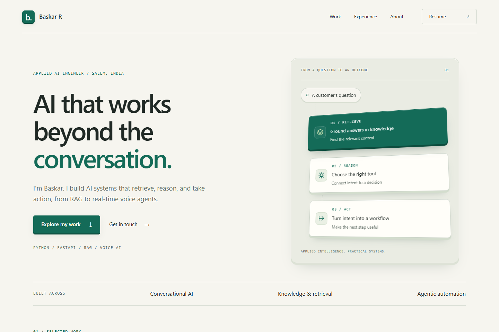
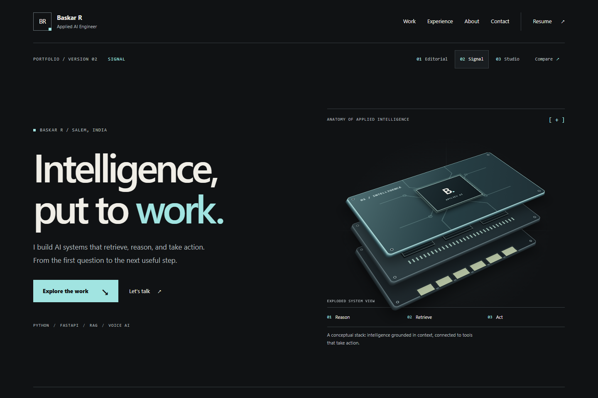
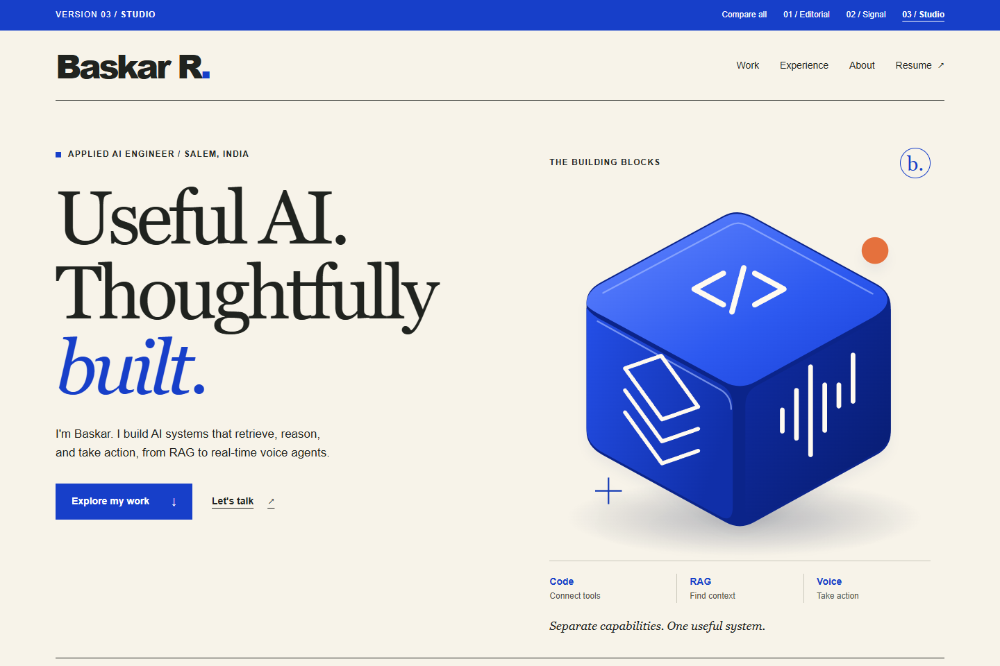

Portfolio / Earlier exploration
View the new Paper, Flow, and Sage options
Three directions.
One engineer.
The same work, expressed three ways. Explore each full homepage to compare its personality, clarity, and sense of depth.
01 — 03
Built to be explored.
01 / EditorialClarity first

Quiet confidence.
Warm paper, precise typography, and tactile 3D cards. A clear, project-first introduction that gives your engineering work room to speak.
- Light & restrained
- Layered cards
- Easy to scan
Explore Editorial ↗02 / SignalTechnical depth

Built for the curious.
Graphite, cool accents, and an exploded system illustration. A technical identity with detailed project stories and deliberate visual structure.
- Dark & architectural
- Exploded 3D stack
- Story-led projects
Explore Signal ↗03 / StudioPersonality first

A human point of view.
Expressive type, sculptural forms, and bold color blocks. A personal, memorable portfolio that balances technical work with an approachable voice.
- Light & expressive
- Sculptural hero
- Bold project panels
Explore Studio ↗Depth, without distraction.
All three work on desktop and mobile, keep the main text readable, and respect reduced-motion preferences. Move your mouse over the hero illustrations to explore their depth.
These are earlier homepage explorations. Project case studies and the printable resume now use the selected Sage design. Opening a version does not replace or publish your main portfolio.